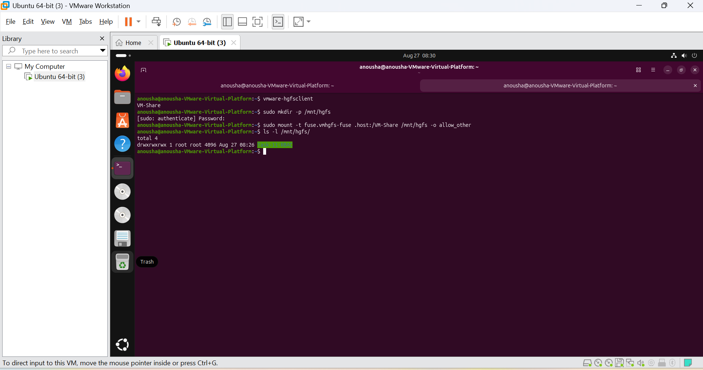
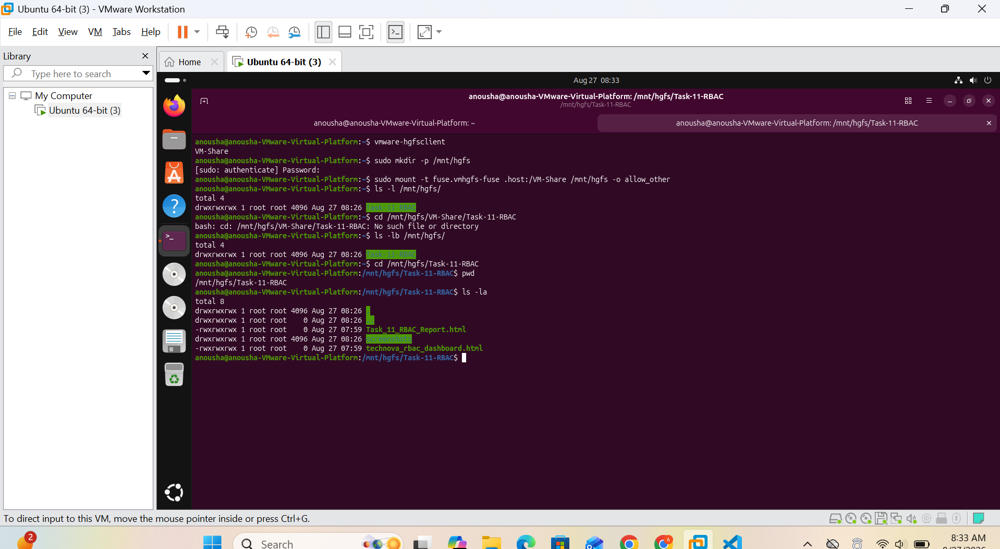

1. Task Overview
This practical demonstrates Role-Based Access Control (RBAC) in a Linux environment by organizing users into departmental groups and controlling their access to departmental resources.
The practical also demonstrates Linux ownership and permissions, POSIX ACLs, controlled read/write access, permission-denied cases, evidence collection, and the preparation of a final HTML report and RBAC dashboard.
2. Practical Environment
| Component | Use in the Practical |
|---|---|
| Ubuntu Linux VM | Users, groups, directories, permissions, ACLs and access testing |
| VMware Workstation | Runs the Ubuntu virtual machine |
| Windows Host | Stores the shared project folder and final documentation |
| VMware Shared Folder | Transfers/opens practical files between Ubuntu and Windows |
| VS Code | Creates and edits HTML documentation and dashboard |
| Browser | Tests the final HTML report and RBAC dashboard |
Shared-folder paths
Windows:
C:\VM-Share\Task-11-RBAC
Ubuntu:
/mnt/hgfs/Task-11-RBAC
3. Practical Stages
Configured the Linux users and departmental groups used for RBAC.
Created and verified departmental directories and their ownership and permission settings.
Used POSIX ACL evidence to control additional user-level access where required.
Tested authorized and unauthorized read/write operations and recorded permission-denied results.
Captured terminal screenshots showing users/groups, permissions, ACLs and access-control tests.
Organized the evidence into a professional HTML report and linked it to the RBAC dashboard.
Configured VMware Shared Folder access so the Ubuntu practical directory could be accessed from Windows VS Code.
4. Stage 1 — Users & Groups
The Linux environment contained six practical users distributed across departmental roles. The configured primary groups represented Administration, Developers and Testers.
| Department / Role | Group | Example User |
|---|---|---|
| Administration | admin | ali |
| Development | developers | ahmed |
| Testing / QA | testers | usman |
The terminal evidence also showed the users ali, sara, ahmed, hamza, usman and zain and the departmental groups admin, developers and testers.

5. Stage 2 — Directory Structure & Permissions
Departmental resources were organized under /company. The evidence showed separate administrative, development, testing and shared areas.
| Area | Purpose |
|---|---|
| /company/admin | Administrative resources |
| /company/admin/employee_records | Employee records |
| /company/admin/finance | Finance resources |
| /company/development | Development resources |
| /company/development/source_code | Source code |
| /company/development/documentation | Development documentation |
| /company/testing | Testing resources |
| /company/testing/test_data | Test data |
| /company/testing/test_reports | QA/test reports |
| /company/shared | Shared organizational resources |
The practical demonstrated that protected directories and files cannot simply be accessed by an unauthorized user.

6. Stage 3 — ACL Configuration
Access Control Lists were inspected for individual files to verify the effective user, group and other permissions.
Development source-code example
sudo getfacl /company/development/source_code/app.py
The recorded ACL evidence showed ahmed as the file owner and developers as the group. It also showed a separate ACL entry for zain, demonstrating user-specific access beyond the basic owner/group model.
Testing report example
sudo getfacl /company/testing/test_reports/test_report.txt
The testing report was owned by usman with the testers group, and an additional user entry was visible for ahmed.

7. Stage 4 — Access-Control Testing
7.1 Permission-denied verification
When protected resources were accessed as the normal user, Linux returned permission-denied messages. This provided direct evidence that the configured permissions were being enforced.
7.2 Ahmed — read access to the testing report
sudo -u ahmed cat /company/testing/test_reports/test_report.txt
This command successfully displayed the QA report, demonstrating that Ahmed had read access to the file.
7.3 Ahmed — write access denied
sudo -u ahmed sh -c 'echo edit >> /company/testing/test_reports/test_report.txt'
This demonstrated that successful read access did not automatically provide write access.
7.4 Zain — source-code read access
sudo -u zain cat /company/development/source_code/app.py
The command successfully displayed the application source code, confirming Zain's permitted read access.
7.5 Zain — write access denied
sudo -u zain sh -c 'echo edit >> /company/development/source_code/app.py'
This confirmed that Zain's access was restricted to the permissions assigned to him.

8. Problems Encountered & How They Were Resolved
Normal-user access to protected departmental files produced
Permission denied.
Administrative verification using
sudo ls -ld ...
was used to inspect ownership and permission configuration.
su - ahmed -c 'cat /company/testing/test_reports/test_report.txt'
This returned
su: Authentication failure.
Instead of relying on the target user's password, the practical used the
administrator's authorized sudo capability:
sudo -u ahmed cat /company/testing/test_reports/test_report.txt
The file was then successfully read as Ahmed.
ls /mnt/hgfs/
ls: cannot access '/mnt/hgfs/': No such file or directory
The mount point was created and the VMware shared folder was mounted:
sudo mkdir -p /mnt/hgfs
sudo mount -t fuse.vmhgfs-fuse .host:/VM-Share /mnt/hgfs -o allow_other
After mounting, the shared folder became visible under
/mnt/hgfs/.
The first attempt to access
/mnt/hgfs/VM-Share/Task-11-RBAC
failed because the mounted VMware share itself was already exposed at
/mnt/hgfs/.
The correct path was:
/mnt/hgfs/Task-11-RBAC
9. Stage 5 — Evidence Collection
Four primary screenshots were collected for the RBAC practical:
- Users and groups
- Directory permissions
- ACL evidence
- Access-control tests
The screenshots were organized inside the screenshots folder so that the HTML report could display them directly.
Task-11-RBAC/screenshots/
10. Stage 6 — HTML Report & RBAC Dashboard
After completing the Linux practical, the evidence was organized into two HTML files:
| File | Purpose |
|---|---|
| Task_11_RBAC_Report.html | Complete practical documentation, evidence, problems and results |
| technova_rbac_dashboard.html | Visual RBAC administration and compliance dashboard |
The report contains navigation links to the dashboard so the practical documentation and visual summary can be accessed together.
Open TechNova RBAC Dashboard11. Stage 7 — VMware Shared Folder & Windows Integration
Because the Linux practical was being performed inside VMware while the HTML documentation was being prepared in Windows VS Code, VMware Shared Folders were used to make the same Task-11-RBAC directory accessible from both systems.
Windows shared-folder configuration
The VMware Shared Folder was configured as VM-Share with the Windows host path:
C:\VM-Share
Ubuntu access
vmware-hgfsclient
sudo mkdir -p /mnt/hgfs
sudo mount -t fuse.vmhgfs-fuse .host:/VM-Share /mnt/hgfs -o allow_other
ls -l /mnt/hgfs/
The shared folder exposed the Task-11-RBAC directory to Ubuntu.
The final practical directory was then accessed as:
cd /mnt/hgfs/Task-11-RBAC
pwd
ls -la
This allowed the HTML report and dashboard created/edited through Windows VS Code to be stored in the same shared project directory.
Shared-folder evidence
The following two screenshots document the VMware Shared Folder and the Ubuntu/Windows file workflow.


12. Final Project Structure
Task-11-RBAC/
│
├── screenshots/
│ ├── 01_users_and_groups.png.png
│ ├── 02_directory_permissions.png.png
│ ├── 03_acl_evidence.png.png
│ ├── 04_access_control_tests.png.png
│ ├── 05_vm_share_setup.png
│ └── 06_vm_share_file_transfer.png
│
├── Task_11_RBAC_Report.html
└── technova_rbac_dashboard.html
Windows location:
C:\VM-Share\Task-11-RBAC
Ubuntu location:
/mnt/hgfs/Task-11-RBAC
13. Final Results
- Users and departmental groups were verified.
- Departmental directories and ownership were verified.
- POSIX ACL entries were inspected and documented.
- Authorized read operations were successfully demonstrated.
- Unauthorized write operations returned Permission denied.
- Permission-related problems were investigated and resolved.
- VMware Shared Folder integration was configured successfully.
- The evidence was organized into a structured HTML report.
- The report was connected to the TechNova RBAC dashboard.
14. Conclusion
This task provided practical experience with Role-Based Access Control in Linux. Users were organized into departmental groups, resources were separated by department, permissions and ACLs were inspected, and real access attempts were used to verify the policy.
The permission-denied cases were especially important because they provided direct proof that unauthorized operations were being restricted. The VMware Shared Folder workflow then connected the Ubuntu practical environment with Windows VS Code, allowing the final evidence, report and dashboard to be maintained in one project directory.
The completed documentation therefore represents the full workflow from Linux configuration and testing to evidence collection, troubleshooting, Windows integration and final RBAC presentation.